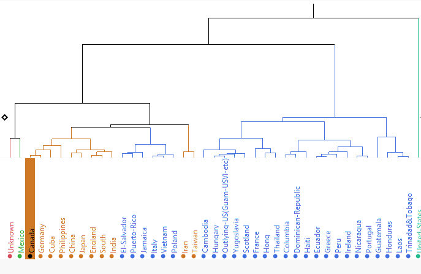

1994 Census data Visualization
Instituto Tecnologico de Costa Rica
Natalia Marin & David Sanchez
Data Analysis: Multivariate data
How to analyze it?
How was the education doing in the World?
Another way to see it...

Tool comparison
| Item |
Tableau |
D3.js |
jmp |
Orange |
???? |
| License requirement |
Yes |
No |
Yes |
No |
??? |
| Development |
Weak |
Best |
Weak |
Good |
??? |